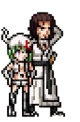
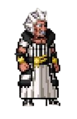
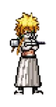
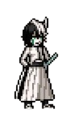
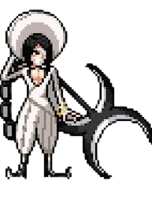
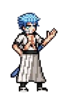
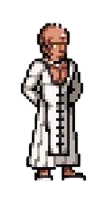
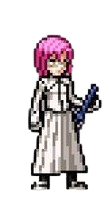
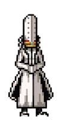
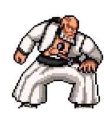

-
Starrk e Lilynette #001
- Los Lobos
- Solidão
Pelo fato de ter uma enorme energia espiritual, que potencialmente matava todos ao seu redor, Coyote viveu boa parte da sua vida isolado, e chegou até a dividir a sua alma para se sentir menos sozinho.
-
Baraggan #002
- Arrogante
- Tempo
Considerado um dos mais temíveis aspectos da morte, Baraggan representa o Tempo, sendo capaz de diminuir a velocidade de qualquer golpe lançado contra ele, além de envelhecer rapidamente qualquer coisa que ele toque.
-
Tier Harribel #003
- Tiburón
- Sacrfício
Tendo uma personalidade calma e equilibrada, Harribel possui um forte vínculo com Sung-Sun, Mila Rose e Apacci, e embora reconheça que nenhum mundo está livre de sacrifícios, ela não deseja produzir estas mortes.
-
Ulquiorra #004
- Murciélago
- Vazio
Como o próprio nome já sugere, a personalidade de Ulquiorra se conecta diretamente com o seu aspecto da morte, com ele tendo uma visão bem pessimista sobre a existência como um todo e expressando a sua total descrença nas emoções humanas.
-
Nnoitra Gilga #005
- Santa Tereza
- Desespero
O mais sádico e sanguinolento entre os Espada, Nnoitra nunca teve escrúpulos contra os seus oponentes, e a sua morte foi igualmente desesperada, já que ele viu Kenpachi o tratar da mesma forma que ele tratou todos os seus outros adversários.
-
Grimmjow Jeagerjaquez #006
- Pantera
- Destruição
Combinando com a sua personalidade impulsiva e impaciente, Grimmjow representa o aspecto da destruição, e além das suas técnicas serem incrivelmente destrutivas, ele só se sente verdadeiramente vivo no meio do combate.
-
Zommari Rureaux #007
- Brujeria
- Intoxicação
Por mais que Zommari cultive uma personalidade aparentemente calma e contemplativa, no calor da batalha ele apresenta outras características, perdendo o seu equilíbrio e se mostrando bem mais arrogante.
-
Szayelaporro Granz #008
- Fornicarás
- Loucura
Sem muitos segredos, Szayelaporro é a personificação perfeita de um cientista e artista louco. Tendo uma personalidade extremamente narcisista e extravagante, Szayelaporro enxerga os outros apenas como cobaias para as suas pesquisas e encara as suas lutas como verdadeiros espetáculos.
-
Aaroniero Arruruerie #009
- Glotoneria
- Ambição
Com a capacidade de absorver outros Hollows para aumentar o seu poder e ganhar habilidades únicas, Aaroniero se encaixa muito bem na definição de ganância, tendo absorvido aproximadamente 33.650 Hollows quando enfrentou Rukia.
-
Yammy Llargo #000
- Ira
- Raiva
Classificado como o Espada 0, Yammy Llargo possui como uma das suas principais habilidades a capacidade de aumentar o seu tamanho e força de forma proporcional à sua raiva.